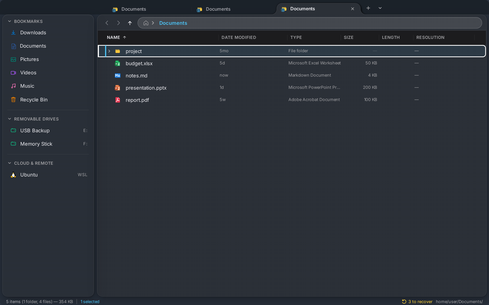
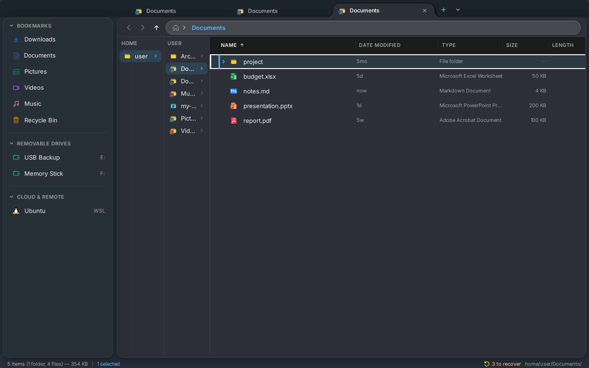

The active tab owns the window
Mocks for the change you described. Everything keeps today's look: the tab's smooth S-curve sides (16px corner flowing straight into the 14px foot), 14px island radius, and the island and tab shadows. They're drawn over a stand-in for the macOS material. The only differences from today are the tab owning the whole window below it and the surface's rounded top-left and top-right corners. Yellow/orange notes are annotations, not UI.
TodayThe tab joins only the main island
The tab strip starts where the main island starts. The active tab's feet join only the main pane island, so the sidebar is a separate island standing on the bare window material, outside the tab altogether. Miller columns, when on, sit inside the main island to the left of the file list.


ProposedThe active tab owns the whole window below it
The active tab owns the whole window below the tab strip. Its surface runs edge to edge: the window's sides and bottom are its edges, so there is no inset frame and no strip of bare material around it. Every island sits directly on it: the sidebar, the main pane, and any split panes or preview. That leaves two levels of edges, the tab's outline and the islands, instead of three. Specifically:
- Layers, back to front: window material (visible only in the tab strip), then the tab's surface filling the window below it, then the islands as cards on that surface. The gaps between islands, and the margin to the window edge, show the tab's surface.
- Tab strip: it starts right after the traffic lights, so tabs run over the sidebar too.
- Outline: the only drawn edge is the tab and the top edge of its surface, one continuous SVG path, so the feet are seamless. The #1734 shadows stay on it: light all round, heavier on the right.
- Switching tabs: the surface stays put and only the tab bump slides to the newly active tab. The surface belongs to whichever tab is active.
Open choices (my defaults in bold)
- Status bar sits on the tab's surface at the bottom of the window, since the tab owns everything below the strip.
- Miller columns keep today's placement (
domain/miller-placement.ts): their own island on the left when the sidebar is hidden and there is one pane, otherwise inside the main island. - Inactive tabs stay unboxed text on the material, with the hover pill as today. Only the active tab is a surface.
- When the sidebar is hidden, the main island fills the width.
- Translucency Opacity keeps driving the island fills. The tab's surface gets the lighter coverage that the gaps between islands use today.